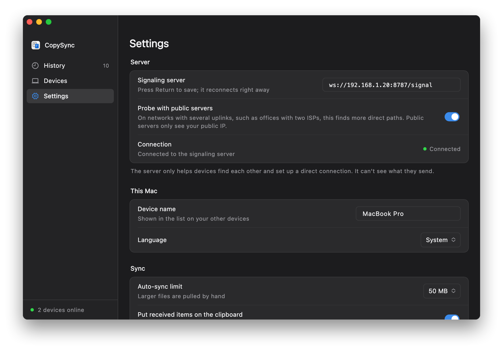

CopySync / Self-host
Run the server on your LAN
If your computers are on the same home or office network, you don't need a cloud server. Pick a computer that stays on, download and run one script, then enter the address it prints into CopySync on each computer.
The server only introduces devices
Each computer stays connected to the server, which is how they find each other and exchange connection details. Once connected, what you copy goes straight between the two computers. Only when that fails does it pass through the server, still encrypted.
- Signaling, TCP 8787. Every computer stays connected to it to find the others, pair and exchange connection details.
- Direct. On a LAN, content almost always goes straight between the two computers, at the speed of your network.
- Relay, UDP 3478. Only used when devices can't reach each other: guest networks, Wi‑Fi with client isolation, separate subnets.
Before you start
- A computer that stays on
- Windows 10 or 11, macOS 13 or later, or any Linux, including one of the two computers you sync. Sync pauses while it's off or asleep and resumes when it wakes. A NAS, home router or Mac mini is ideal; the server uses about 15 MB of RAM.
- A fixed address
- Reserve an address for it in your router's DHCP settings (often called DHCP reservation or static lease). Otherwise, when the router hands out a new address, every computer has to be updated.
- The same network
- Devices just need to be on the same Wi‑Fi or wired network. Guest networks and Wi‑Fi with client (AP) isolation block devices from reaching each other; use another network or turn isolation off.
- No sync away from it
- The server is only reachable on your LAN, so a laptop taken elsewhere catches up when it's back. To sync from anywhere you need a server with a public IP; see Install on the home page.
Install the server
Choose the system of the computer that will run the server. The script finds the computer's LAN address, sets the server to start automatically, and prints the address to enter in the apps.
Windows
- Download copysync-server-windows-amd64.zip and choose Extract All.
- Open the extracted folder and double-click
install.cmd.If you see "Windows protected your PC", click More info, then Run anyway; when User Account Control asks, click Yes. The server isn't code-signed yet, which is why Windows asks once. - Installation continues in a new window. The
ws://…/signaladdress at the end is what you enter in the apps.
- Runs as a Windows service: starts with Windows, no sign-in needed, no window. It appears as CopySync Server in Services.
- Firewall already allowed: the script adds an inbound rule for copysync-server.exe only, so there are no ports to open.
- Wrong address picked (several network adapters, say from a VM or VPN): type
cmdin the address bar of the extracted folder, press Enter and runinstall.cmd 192.168.1.20with your address. - Windows 10 and 11, x64.
- copysync-server.exe
- install.cmdDouble-click
- install.ps1
- README.md
- uninstall.cmd
> Stopping the running version > Installing to C:\Program Files\CopySync Server > Registering the service CopySyncServer (relay address 192.168.1.20) > Allowing it through Windows Firewall > Starting √ Running Installed: copysync-server 1.3.3. It runs as a Windows service and starts with Windows. In CopySync on each computer, set Settings > Signaling server to: ws://192.168.1.20:8787/signal Program C:\Program Files\CopySync Server Logs C:\ProgramData\CopySync Server\server.log Restart Restart-Service CopySyncServer (in an administrator PowerShell) Uninstall double-click uninstall.cmd
| Status | Get-Service CopySyncServer in an administrator PowerShell, or find CopySync Server in Services |
|---|---|
| Logs | C:\ProgramData\CopySync Server\server.log |
| Restart | Restart-Service CopySyncServer in an administrator PowerShell |
| Upgrade | Download the new version, extract it and double-click install.cmd again; your settings are kept |
| Uninstall | Double-click uninstall.cmd; it removes the service, the firewall rule and the files |
macOS
- Open Terminal and run these lines:
curl -LO https://github.com/baiyuze/copysync/releases/latest/download/copysync-server-macos.tar.gz tar xzf copysync-server-macos.tar.gz cd copysync-server-macos ./install.sh - The
ws://…/signaladdress at the end is what you enter in the apps.
- No administrator rights needed. It runs in the background whenever you're logged in, and macOS restarts it if it exits.
- Keep this Mac awake: in System Settings → Energy (Battery → Options on a laptop), turn on the option that prevents automatic sleep.
- If the macOS firewall is on, the script ends with the command to allow copysync-server.
- Intel and Apple silicon, macOS 13 or later.
% ./install.sh ▶ Stopping the running version ▶ Installing to /Users/me/Library/Application Support/CopySync Server ▶ Writing the LaunchAgent (relay address 192.168.1.20) ▶ Starting ✓ Running Installed: copysync-server 1.3.3. It starts whenever you log in to this Mac. In CopySync on each computer, set Settings → Signaling server to: ws://192.168.1.20:8787/signal Logs /Users/me/Library/Logs/CopySync/server.log Restart launchctl kickstart -k gui/501/com.copysync.server Uninstall ./install.sh uninstall
| Logs | ~/Library/Logs/CopySync/server.log |
|---|---|
| Restart | launchctl kickstart -k gui/$(id -u)/com.copysync.server |
| Upgrade | Download the new version, extract it and run ./install.sh again; your settings are kept |
| Uninstall | ./install.sh uninstall |
Linux
- On the machine itself, or over ssh, run these lines:On ARM, such as a Raspberry Pi with a 64-bit OS, replace
amd64witharm64.curl -LO https://github.com/baiyuze/copysync/releases/latest/download/copysync-server-linux-amd64.tar.gz tar xzf copysync-server-linux-amd64.tar.gz cd copysync-server-linux-amd64 sudo ./install.sh - The
ws://…/signaladdress at the end is what you enter in the apps.
- Registers a systemd service that starts on boot. Needs root.
- If ufw or firewalld is active, the script ends with the commands to open the ports.
- Docker works too: copy
env.exampleto.env, setTURN_IPto the machine's LAN address and rundocker compose up -d. It needs host networking, so Linux only.
$ sudo ./install.sh ▶ Installing the binary to /usr/local/bin ▶ Writing the systemd unit ▶ Writing /etc/copysync/server.env (relay address 192.168.1.20) ▶ Starting ✓ Running Installed: copysync-server 1.3.3 In CopySync on each computer, set Settings → Signaling server to: ws://192.168.1.20:8787/signal Config /etc/copysync/server.env Logs journalctl -u copysync-server -f Restart systemctl restart copysync-server Uninstall sudo ./install.sh uninstall Open in your firewall: TCP 8787 (signaling), UDP 3478 (STUN and TURN), UDP 32768-60999 (relay ports, assigned by the OS)
| Status | systemctl status copysync-server |
|---|---|
| Logs | journalctl -u copysync-server -f |
| Restart | sudo systemctl restart copysync-server |
| Config | /etc/copysync/server.env; restart the service after editing |
| Upgrade | Download the new version, extract it and run sudo ./install.sh again; your config is kept |
| Uninstall | sudo ./install.sh uninstall |
Check that other computers can reach it
On another computer, open http://192.168.1.20:8787/healthz in a browser (with your address). If you see this line, the network path works.
{"status":"ok","version":"1.3.3"}
If it doesn't load, see the questions below.
Enter the address on each computer
Open Settings
Open CopySync on each computer, including the one running the server, and go to Settings.
Enter the address
Under Signaling server, enter
ws://192.168.1.20:8787/signalwith your address and press Return or Enter.Check the status
When Connection shows a green Connected, you're set. Pair your devices under Devices and copying starts syncing.

Haven't installed the app yet? See Install on the home page.
Questions
The status stays at Not connected
Check the address first: it starts with ws://, uses port 8787, ends in /signal, and you pressed Return after typing it.
Then open http://server-address:8787/healthz in a browser on that computer. If it doesn't load, the network path is broken: the server isn't running, its computer is asleep, a firewall blocks it, or its address changed.
The Windows script already allows the server through the firewall. On a Mac with the firewall on, run the command the script printed at the end; the same goes for ufw and firewalld on Linux.
Devices show Relay instead of Direct
On a LAN connections are almost always direct. Relay means UDP can't get between the two computers, usually because of a guest network, Wi‑Fi client isolation, or separate subnets with a firewall in between. Relayed content is still encrypted; it's just limited by the server computer's network.
The server's address changed
Run the script again with the new address: install.cmd new-address on Windows, ./install.sh new-address on a Mac. On Linux, edit -turn-ip in /etc/copysync/server.env and restart the service. Then update the address on each computer.
Reserving the address in your router avoids this.
Does it sync away from the LAN?
No, the server is only reachable on your LAN. To sync from anywhere, deploy the server on a machine with a public IP (steps under Install on the home page), or join your devices with a mesh VPN such as Tailscale or ZeroTier and enter the server's address on that network.
A cloud server in mainland China works by IP but not by domain
Cloud providers in mainland China intercept plain HTTP requests for domains without an ICP filing and answer with a redirect to a block page; in our tests that included non-standard ports such as 8787. The WebSocket handshake is an HTTP request too, so it is intercepted and the app shows Not connected.
Enter the server's IP instead, as in ws://server-ip:8787/signal, or file the domain.
The server computer also runs CopySync. Which address?
The same LAN address works, and so does ws://127.0.0.1:8787/signal. The server and the app don't interfere.
One computer that stays on is enough.
Version 1.3.3, free and open source. macOS 13 or later, Intel and Apple silicon; Windows 10 and 11.
Full server guide, including public servers and Docker